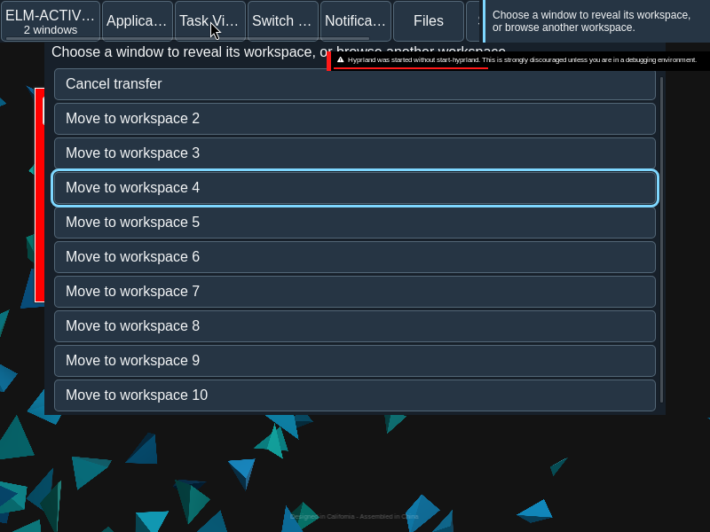
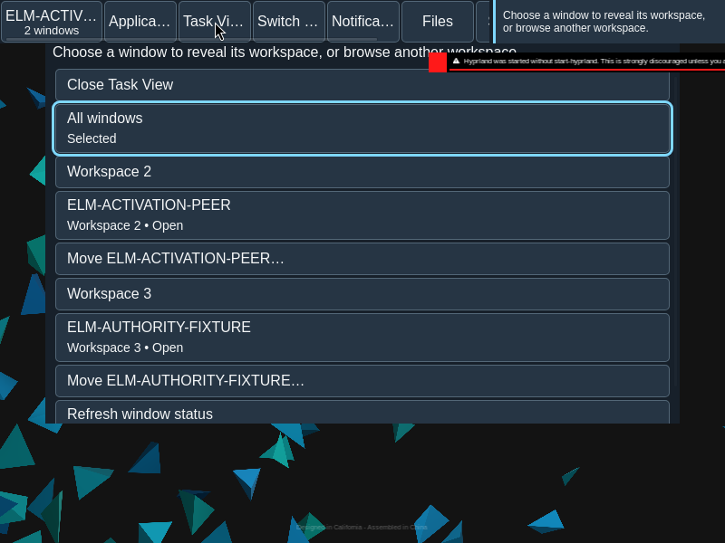

Workspace transfer
Transfer moves an eligible window family to an explicitly chosen workspace.
Overview
Transfer moves an eligible window family to an explicitly chosen workspace.
Anatomy
The Task View move action opens an in-place destination list with a Cancel control.
The source is the family whose Move control was invoked. The destination list names eligible workspaces and includes Cancel transfer; it replaces the ordinary Task View controls during selection.
States
Pending, refused and unknown outcomes differ from observed membership. Source membership remains until fresh observations confirm a change.
- Choosing: no move has been submitted.
- Pending: the requested move awaits its outcome.
- Refused: the operation did not proceed.
- Unknown: the outcome is not established; refresh reads facts without resubmitting.
- Observed: fresh membership establishes where the family is.
Specimen
Real Elm interface. Simulated desktop. Client window interiors are fixtures. Load the desktop only when you want to explore this component.
Behavior
Choose Move, then an eligible destination. The proposal binds the source workspace generation. Cancel returns to the initiating control when available.
Choose a destination explicitly. A proposal carries the source workspace generation, so a stale source cannot silently become a move from a different workspace. Filtering and workspace navigation are separate operations.
Accessibility
Destination controls use explicit workspace names; cancellation and focus return remain available through keyboard navigation.
Content
Name the source family and destination. Refresh reads current facts and does not repeat an uncertain move.
Use the family name and workspace identity to make both ends of the move clear. Report a receipt as a receipt, not as observed completion.
Evidence
Unmodified captures of the running interface record the states below.


Try it
Explore workspace transfer in context on the simulated desktop.